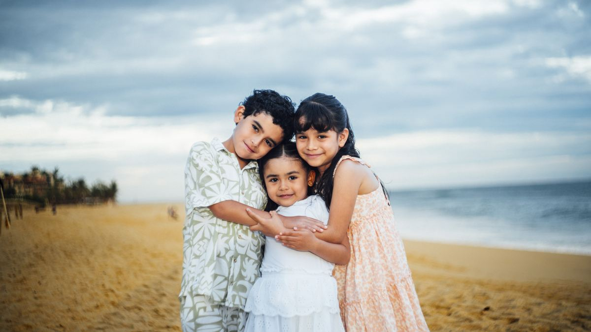
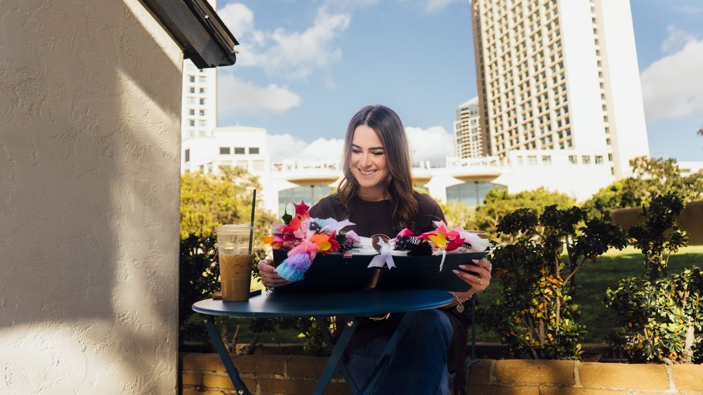

Matrimonio y familia
Casada con el amor de su vida.
Efrén y Michelle no cuentan el matrimonio perfecto. Cuentan el suyo: el que se ha probado.

Ellos dos
De su historia salieron dos cosas
Un libro sobre construir un «nosotros» y un podcast donde se dice lo que normalmente se calla. Los dos nacieron del mismo lugar: su propio matrimonio, el que se ha probado.

El libro
Amor a prueba de todo
El libro sobre matrimonio que Michelle señala como la puerta de entrada a esta sección: «casada con el amor de mi vida… el libro, adquiérelo».
Sus favoritos
Lo que ella usa y recomienda.
Michelle mantiene una selección abierta en Amazon: lo que usa para su Biblia, para la casa y para viajar. La lista la actualiza ella.
Ver la selección
El podcast
Podcast con Efrén y Michelle Ruiz
Conversaciones sobre matrimonio, familia y fe. En video y en audio.
- Matrimonio
- Comunicación en pareja
- Fe en casa
- Familia
- Preguntas de la comunidad
Episodios anteriores
Los episodios que ya salieron, del más reciente hacia atrás. Se cargan del canal, así que esta lista nunca se queda vieja.
Próxima serie
Michelle: «si viene una nueva serie para matrimonios…»
Gratuito · En línea
Diez díasjuntos
Programa virtual para matrimonios En vivo por Zoom
Diez días juntos se vive completo desde su casa: en vivo por Zoom, sin viajar a ningún lado. Son diez encuentros cortos para matrimonios y parejas que quieren volver a hablarse. Michelle y Efrén conducen desde la pantalla; ustedes sólo tienen que conectarse.
- Nombre «Diez días juntos»
- Fecha
- Dónde En línea, en vivo por Zoom No hay sede presencial
- Costo Sin costo
- Cupo 500 parejas
Quinientos lugares. Si se llenan, se abre una segunda vuelta.
Código QR
Apunta a esta misma sección. Se genera cuando el dominio final esté decidido.
Registro para matrimonios
Amor aprueba de todo
Cinco días, cinco puntos para volver a hablarse, fortalecer los cimientos y construir un nosotros con intención.
Efrén + Michelle Ruiz
Envía tu pregunta
¿Qué te gustaría que respondieran?
Las preguntas de la comunidad se usan como material para episodios. Puedes enviarla sin dar tu nombre.